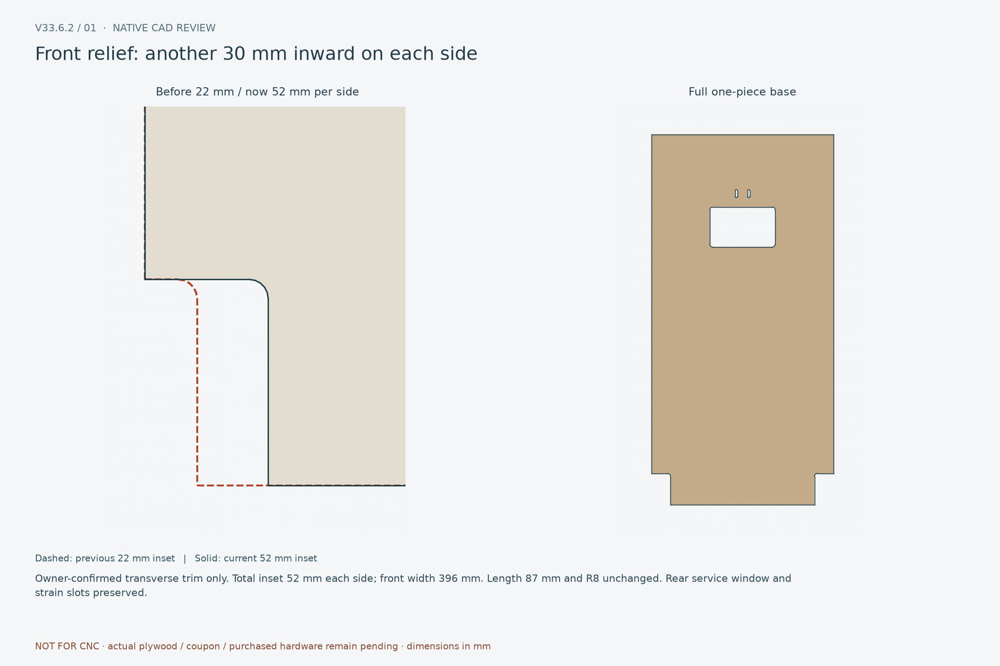
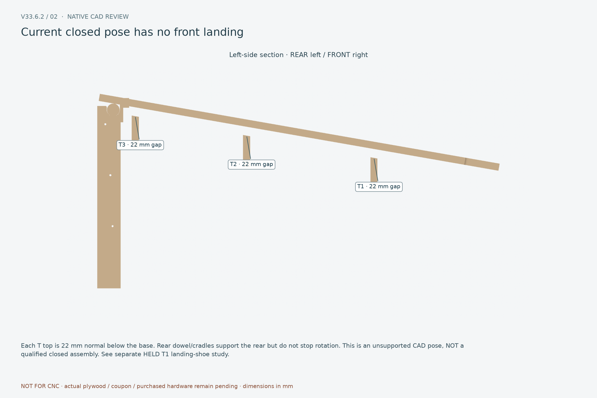
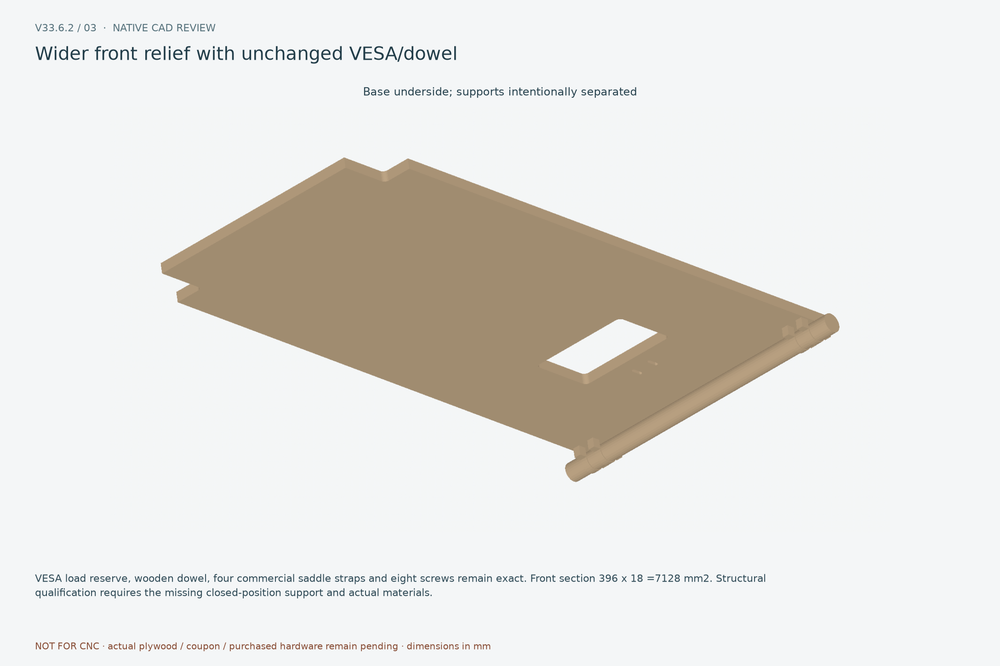

Front relief: another 30 mm inward on each side

Owner-confirmed transverse trim only. Total inset 52 mm each side; front width 396 mm. Length 87 mm and R8 unchanged. Rear service window and strain slots preserved.
14 native CAD reviews. Front ergonomic buttons restored; clean open-edge playfield relief. Full-sheet release remains blocked. Report

Owner-confirmed transverse trim only. Total inset 52 mm each side; front width 396 mm. Length 87 mm and R8 unchanged. Rear service window and strain slots preserved.

Each T top is 22 mm normal below the base. Rear dowel/cradles support the rear but do not stop rotation. This is an unsupported CAD pose, NOT a qualified closed assembly. See separate HELD T1 landing-shoe study.

VESA load reserve, wooden dowel, four commercial saddle straps and eight screws remain exact. Front section 396 x 18 =7128 mm2. Structural qualification requires the missing closed-position support and actual materials.